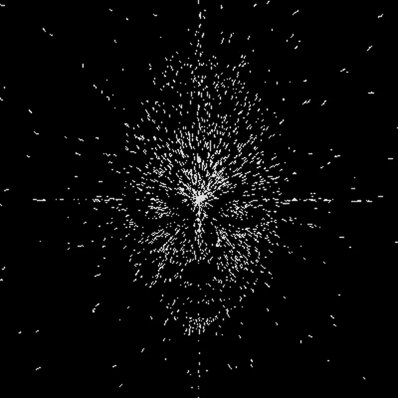
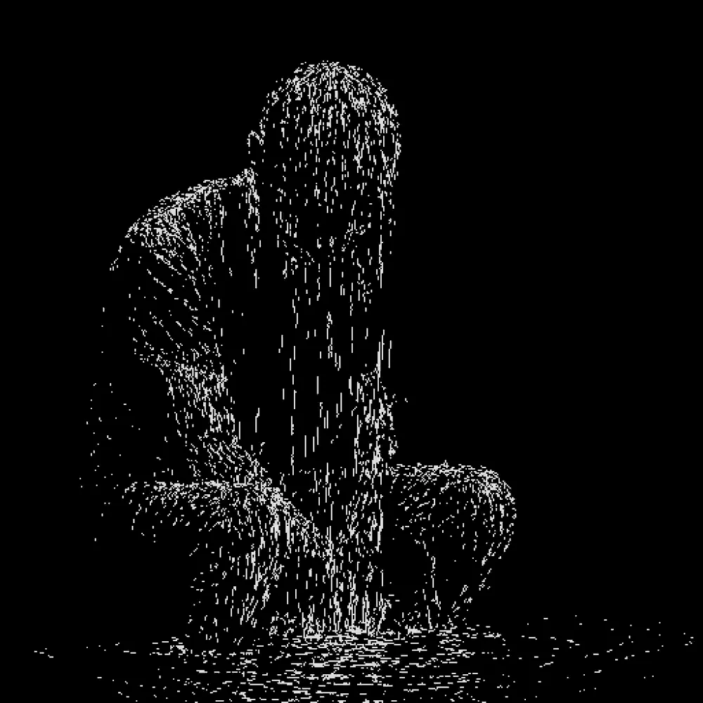
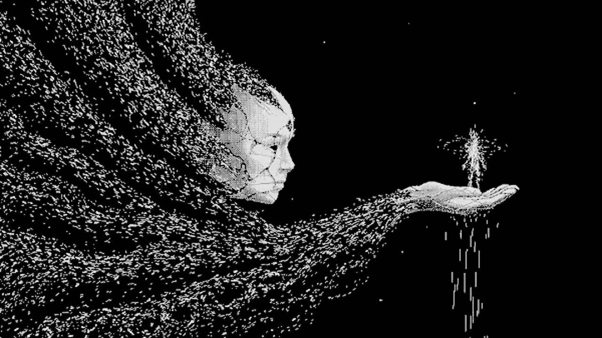
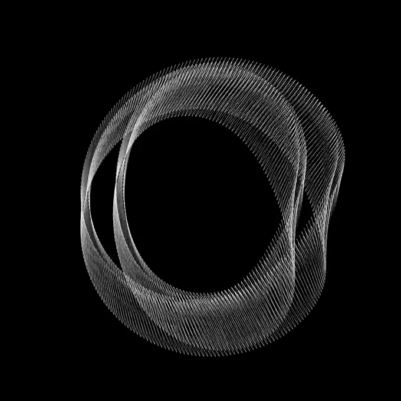

Creative studio
Light, shaped after dark.
nightly designs identities, films and 3D worlds in black and white. We work slowly and by hand, frame by frame, until every detail holds.

Every brand begins as a single point of light.
We build identity systems that stay clear at every size, from an app icon to a building facade. Each one starts with one idea and grows outward until it carries the whole company.

Motion
Stillness, set in motion.
Our films and loops move at the pace of attention. We direct, animate and edit for rhythm and atmosphere, so a few seconds on a screen can carry a whole campaign.

3D & CGI
Small worlds, held with care.
We model, light and render objects, characters and spaces that cannot be photographed. The people who design a scene stay with it from the first sketch to the final frame.
Studio
We work in black and white by choice. With no colour to lean on, every decision about form, light and timing has to stand on its own.

-
Slowly
We take on a few projects at a time and give each one the hours it needs. Schedules are agreed at the start and kept.
-
Precisely
Spacing, timing and type are tuned until nothing feels accidental. Small things decide whether a piece feels expensive.
-
Quietly
We remove whatever does not serve the idea, then we stop. What is left should feel calm and certain.